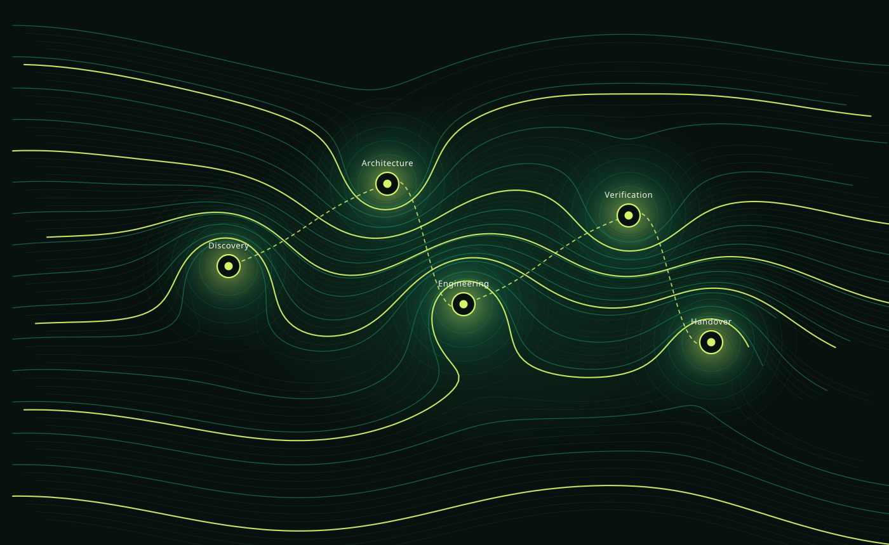

Understand the work.
We talk to the people doing the work and follow a task through the tools, records, and approvals it touches. Together we agree on the first problem to solve.
What you reviewA map of the current workflow and an agreed scope.
We follow a real task from start to finish, then build and test software around what people need to do. Each stage gives your team something concrete to review.
Explore the process
We talk to the people doing the work and follow a task through the tools, records, and approvals it touches. Together we agree on the first problem to solve.
What you reviewA map of the current workflow and an agreed scope.
We work out which systems and people own each record, who can act on it, and which existing tools need to stay connected. We discuss trade-offs with the team that will run the system.
What you reviewA system outline, access rules, and the plan for connecting existing software.
We build a complete path through one useful workflow. Your staff can try it with representative tasks, point out gaps, and help shape what we build next.
What you reviewWorking software you can try and give feedback on.
We check routine work alongside cases like a duplicate request, a denied approval, or a lost connection. Your team can see what passed and what needs attention before rollout.
What you reviewTest results, open issues, and what has been verified for release.
We walk your team through setup, support, and recovery. We document how the software is maintained and agree on how changes can be introduced as your operations evolve.
What you reviewOperating guides, ownership responsibilities, and the maintenance plan.
Tell us what your team needs to do, where it slows down, and how you would know that it works better.